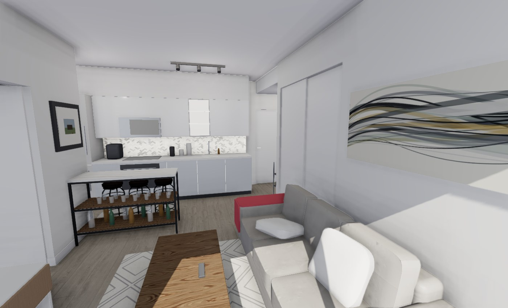
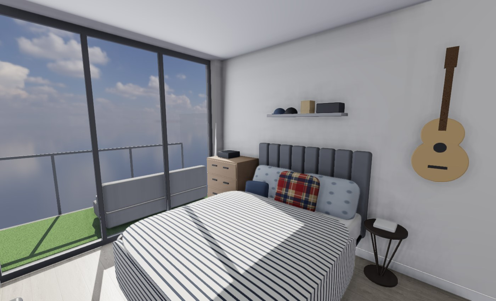
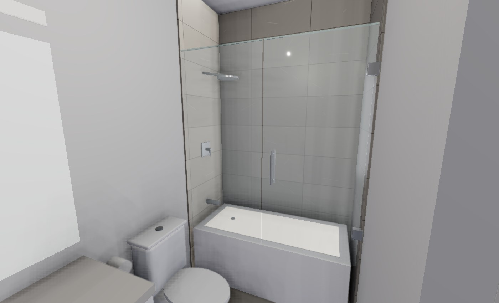

The problem
A pre-construction floor plan and a handful of photos do not show how a unit feels to stand in. The goal was a 3D model accurate enough to plan furniture and show the space to someone remotely.
How it works
- 2D floor plan
- Trace and calibrate scale
- plan.json geometry
- three.js viewer
- Furnish and light
- Scale from the plan's own dimensions. The tracing script calibrates pixels per foot against the room dimensions written on the plan, then outputs every wall, door, window and fixture in feet.
- Honest about what is measured. Each room is tagged as using a written dimension or a scaled one, and the ceiling height is recorded as assumed, not measured.
- Geometry as data. The viewer reads one JSON file: 23 walls, 5 swing doors, 3 sliding doors, 11 fixtures and 9 rooms. Changing the plan regenerates the model.
- Furniture built in code. Sofas, shelving, kitchen fittings and bathroom fixtures are modelled procedurally in JavaScript, with a few CC0 library models.




The walkthrough loads about 26 MB of textures and works best on a desktop browser. Use the mouse to orbit, or switch to walk mode and use the W, A, S and D keys.